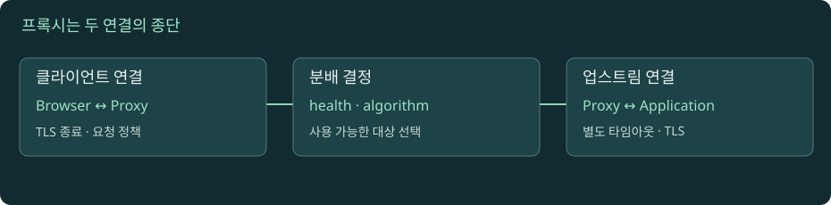

프록시와 로드밸런서: 요청을 어디로 보내고 누가 응답하는가
사용자와 앱 사이의 장치를 역할별로 구분합니다. 연결 분배와 요청 분배, TLS 종료와 재암호화, 헬스 체크와 실제 업무 성공을 나누어 분석합니다.

로드밸런서 분배 실험
자바스크립트를 켜면 실험을 조작할 수 있습니다. 아래 본문·도식·실습은 그대로 읽을 수 있습니다.
01. 1. Forward와 reverse는 누구를 대신하는가의 차이다
사용자가 회사의 인터넷 프록시를 통해 외부 사이트에 접속하면 프록시는 클라이언트 쪽의 대리 역할을 합니다. 이를 forward proxy라고 부릅니다. 반대로 서비스 운영자가 여러 앱 서버 앞에 둔 장치가 외부 요청을 받아 내부 앱으로 전달하면 reverse proxy입니다. 외부 사용자는 내부 서버 목록을 몰라도 공개 주소 하나로 접근할 수 있습니다. 두 경우 모두 중간에서 통신을 전달하지만 설정 주체와 보호하려는 경계가 다릅니다.
리버스 프록시 하나가 TLS 종료, HTTP 라우팅, 압축, 캐시, 요청 크기 제한, 접근 로그를 함께 담당할 수 있습니다. 이 기능들이 모두 같은 것은 아닙니다. 캐시를 끄더라도 라우팅은 남을 수 있고 TLS 종료 없이 연결을 전달할 수도 있습니다. CDN도 사용자 가까운 위치에서 캐시와 전달을 제공하는 프록시 역할을 하므로, 응답을 받은 위치와 원본 앱이 실행된 위치가 다를 수 있습니다. 장애 그림을 그릴 때 제품 이름만 나열하지 말고 각 장치가 수행하는 기능과 응답을 직접 만들 수 있는 조건을 적어 보세요.
02. 2. L4와 L7은 어떤 정보를 보고 분배하는가
L4 방식은 전송 연결 수준의 주소와 포트 등을 기준으로 대상 연결을 선택하는 모델입니다. HTTPS 내용을 복호화하지 않는 순수한 연결 전달에서는 URL 경로나 쿠키를 읽어 라우팅할 수 없습니다. L7 방식은 HTTP 같은 애플리케이션 메시지를 해석하여 호스트 이름, 경로, 헤더에 따라 라우팅할 수 있습니다. HTTPS의 HTTP 정보를 읽으려면 일반적으로 그 지점에서 TLS를 종료해야 합니다. 다만 실제 장비는 여러 기능을 결합하므로 L4/L7라는 이름만으로 모든 동작을 판단하면 안 됩니다.
예를 들어 /images/는 이미지 서버, /api/는 API 서버로 보내는 규칙은 HTTP 경로를 아는 계층의 판단입니다. 같은 HTTP/2 연결 안의 요청들이 서로 다른 업스트림으로 갈 수 있습니다. 반면 연결을 통째로 한 서버에 전달하면 그 연결 안의 모든 스트림이 같은 대상으로 가는 경로가 흔합니다. TLS ClientHello의 SNI 등을 읽고 종료 없이 분기하는 기능도 있으므로, “복호화 안 하면 어떤 분기도 불가”라는 극단도 피하세요. NGINX ssl_preread
03. 3. 분배 알고리즘의 목표와 한계를 비교한다
라운드로빈은 요청을 순서대로 나눕니다. 요청 비용과 서버 성능이 비슷하면 이해하기 쉽지만, A 요청이 10초이고 B 요청이 10ms인 서비스에서는 요청 수가 같아도 부하는 다릅니다. 가중치는 서버 용량 차이를 반영하고, least connections는 현재 연결 수를 고려합니다. 그러나 연결 하나 안에 많은 HTTP/2 스트림이 있거나, 연결은 열려 있지만 작업하지 않는 경우도 있어 연결 수가 실제 CPU 작업량과 같지는 않습니다. 특정 제품의 구현 단위를 확인해야 합니다.
예시로 서버 A의 처리 시간이 50ms, 서버 B가 500ms라고 합시다. 한 번씩 번갈아 보내면 요청 개수는 균등하지만 B의 동시 처리량과 대기열이 더 커질 수 있습니다. 반대로 현재 연결 수만 보고 A로 몰면 연결 수로 드러나지 않는 고비용 작업 때문에 A도 과부하될 수 있습니다. 실험에서는 알고리즘과 서버 응답 시간을 바꾸고 요청 분포, 완료 지연, 실패를 함께 관찰하세요. 목표는 “모든 서버에 같은 개수”가 아니라 허용 가능한 지연과 실패율로 전체 일을 처리하는 것입니다. NGINX HTTP load balancing
04. 4. Health check는 제한된 질문에 대한 관측이다
/health가 200이라는 사실은 그 경로가 해당 시점에 응답했다는 뜻입니다. 결제 DB에 쓰기, 외부 API 인증, 특정 테넌트 권한까지 모두 성공했다는 뜻은 아닙니다. 너무 얕으면 실제 장애를 놓치고, 너무 무거우면 점검 자체가 서비스 부하를 늘립니다. liveness는 프로세스의 기본 생존, readiness는 새 트래픽을 받을 준비 같은 관점을 표현하지만 실제 경로가 무엇을 검사하는지 읽어야 합니다.
실패 횟수와 점검 간격 때문에 서버 장애 감지에는 시간이 걸립니다. 서버가 죽은 직후에도 이미 열린 연결이나 아직 갱신되지 않은 상태로 요청이 도착할 수 있습니다. 반대로 순간적인 점검 실패로 모두 제외하면 정상 용량까지 사라질 수 있습니다. 모든 대상이 unhealthy일 때 동작도 제품마다 다릅니다. 예를 들어 AWS ALB는 특정 전부 불량 상황에서 fail-open 동작을 명시하므로, 시뮬레이터의 “불량 서버 제외”를 모든 제품의 보장으로 옮기지 않습니다. ALB health check 문서
05. 5. TLS를 종료하면 앞뒤 연결은 별도 계약이 된다
브라우저와 프록시 사이의 TLS, 프록시와 앱 사이의 연결은 각각 다른 연결입니다. 앞쪽이 HTTP/2여도 뒤쪽은 HTTP/1.1일 수 있고, 앞쪽이 HTTPS여도 뒤쪽은 HTTP일 수 있습니다. 재암호화하는 경우에도 프록시가 업스트림 이름과 인증서를 올바르게 검증하는지 확인해야 합니다. “443으로 보낸다”는 포트 정보만으로 검증 여부까지 증명하지 못합니다.
이 구조는 운영 권한도 바꿉니다. 인증서 교체는 어느 종료 지점에 적용해야 하는가? mTLS 클라이언트 인증은 누가 확인하고 그 결과를 앱에 어떻게 전달하는가? 프록시가 원본 사용자 IP를 기록했어도 앱 소켓에는 프록시 IP만 보일 수 있습니다. 클라이언트가 보낸 scheme이 HTTPS였다는 정보가 앱까지 전달되지 않으면 앱이 잘못된 HTTP 리다이렉트를 만들 수도 있습니다. 따라서 앞뒤 프로토콜과 신뢰 정보를 명시한 연결 그림이 단순한 인프라 아이콘 모음보다 중요합니다. ALB 업스트림 프로토콜
06. 6. 전달 헤더는 누가 썼는지를 검증해야 한다
앱이 소켓의 원격 주소만 보면 사용자 대신 프록시 주소가 보입니다. 이를 보완하기 위해 Forwarded나 X-Forwarded-For, X-Forwarded-Proto 같은 정보가 사용됩니다. 문제는 일반 HTTP 헤더는 클라이언트도 만들 수 있다는 것입니다. 사용자가 보낸 X-Forwarded-For: 127.0.0.1을 그대로 신뢰하면 내부 사용자로 오인하거나 감사 로그를 오염시킬 수 있습니다.
신뢰할 프록시의 주소 범위와 헤더 덮어쓰기·추가 규칙을 정하고, 그 경로를 실제로 거쳤을 때만 해석해야 합니다. 프록시가 여러 개라면 왼쪽 첫 값을 무조건 사용하거나 오른쪽 마지막 값만 쓰는 단순 규칙도 위험합니다. 신뢰할 수 있는 연결에서 온 체인을 신뢰 경계에 맞게 해석합니다. 직접 앱 접근이 가능하면 프록시 헤더를 위조하는 우회 경로가 남는지도 확인합니다. RFC 7239 §8, NGINX realip 설정
07. 7. 버퍼링·업로드 제한·타임아웃은 사용자 경험을 바꾼다
프록시는 요청 본문을 먼저 받아 저장한 뒤 앱으로 보내거나, 응답을 모았다가 클라이언트에 보낼 수 있습니다. 이런 버퍼링은 느린 클라이언트로부터 앱을 보호하지만 스트리밍의 첫 메시지를 늦출 수도 있습니다. 프록시에서 요청 크기 제한으로 거절하면 앱에는 요청 로그가 없을 수 있습니다. “앱 로그가 없으니 사용자가 요청하지 않았다”라는 결론이 틀리는 대표적인 경우입니다.
타임아웃 이름도 그대로 믿지 말고 측정 구간을 확인하세요. NGINX의 proxy_read_timeout은 전체 응답 완료 시간 하나를 제한하는 값이 아니라 연속 읽기 사이의 비활성 간격에 관한 설정입니다. 짧은 데이터가 계속 오면 전체 응답 시간이 훨씬 길어질 수 있습니다. 다른 프록시의 total timeout과 같은 값으로 복사하면 의미가 달라집니다. 재시도를 수행하는 계층이 여러 개면 앱이 한 요청을 여러 번 받을 수도 있으므로 부작용과 중복 방지 키를 함께 설계해야 합니다. NGINX proxy_read_timeout
08. 8. 배포와 장애에서는 연결을 천천히 비운다
서버를 대상 목록에서 빼는 것과 기존 요청이 모두 끝난 것은 다릅니다. 새 요청을 받지 않도록 바꾼 후 진행 중 요청과 긴 연결을 처리할 시간을 주는 drain 과정이 필요합니다. 즉시 프로세스를 종료하면 업로드, 다운로드, WebSocket이 중간에 끊길 수 있습니다. 반대로 종료를 무한정 기다리면 배포가 끝나지 않으므로 최대 대기와 클라이언트 복구 정책을 정해야 합니다.
세션을 서버 메모리에 저장하고 사용자를 같은 서버에 붙이는 sticky session은 초기 구현을 단순하게 하지만 서버 장애와 용량 분배에 제약을 만듭니다. 연결 해시와 사용자 세션 고정도 서로 다른 개념입니다. 특정 사용자만 실패하면 고정된 대상, 특정 경로만 실패하면 라우팅 규칙, 특정 업로드 크기만 실패하면 제한과 버퍼를 의심할 수 있습니다. 이것은 다음 관찰을 고르는 출발점이며 직접 로그 없이는 확정 원인이 아닙니다. 요청 ID를 앞과 뒤에서 연결해 “어느 홉이 응답했는지” 확인하는 습관이 장비 이름 암기보다 실무에 도움이 됩니다.
09. 9. 요청 수와 업스트림 연결 수를 따로 센다
브라우저 1,000개가 각자 프록시에 연결해도 프록시가 앱에 1,000개의 새 연결을 반드시 만드는 것은 아닙니다. 프록시는 업스트림 연결 풀을 재사용할 수 있고, 반대로 실패·재시도·분배 규칙 때문에 요청 하나가 여러 대상 시도로 이어질 수도 있습니다. 따라서 사용자 요청 수, 프록시가 받은 요청 수, 업스트림 시도 수, 앱이 시작한 처리 수를 별도 지표로 봅니다. 이 값이 다른 이유가 모두 유실이나 중복 버그인 것은 아닙니다.
가상 예시로 사용자 요청 100개 중 10개가 첫 업스트림 시도에서 실패하고 다음 서버에서 성공했다면, 앞쪽에는 100개 응답만 보여도 뒤쪽 시도는 110개일 수 있습니다. 첫 시도의 부작용이 실행되었는지 모르면 “전부 성공”이라는 집계만으로 중복 위험을 배제할 수 없습니다. 로그에 요청 ID와 시도 번호를 함께 남기면 원래 요청과 내부 재시도를 구분할 수 있습니다. 반대로 클라이언트 재시도에서 새 ID를 생성했다면 여러 ID가 같은 업무 요청에 속할 수 있으므로 업무 중복 방지 키의 역할도 따로 확인합니다. 실험의 점 하나는 사용자 요청인지 업스트림 시도인지 범례를 읽고 해석하세요.
실습 · 위조 가능한 헤더와 분배 모델 관찰
먼저 교재 폴더의 tools/lab_server.py를 실행한 로컬 HTTP 실습 환경을 사용합니다. 이 서버는 관찰용이며 실제 리버스 프록시·로드밸런서를 구현하지 않습니다. 포트 8765가 사용 중이면 서버 옵션과 명령의 포트를 함께 바꿉니다.
curl -i http://127.0.0.1:8765/inspect로 앱이 받은 요청을 확인합니다.curl -i -H 'X-Forwarded-For: 127.0.0.1' -H 'X-Forwarded-Proto: https' http://127.0.0.1:8765/inspect를 보냅니다. 서버가 헤더를 출력하는 것과 해당 정보가 검증된 것은 다르다고 설명합니다.- 개발자 도구의 Remote Address와 응답 본문에 반영된 헤더를 비교합니다. 연결의 실제 상대와 사용자가 주장한 주소를 구분합니다.
- 로드밸런서 실험에서 같은 시간의 서버를 라운드로빈으로 분배합니다. 그다음 한 서버를 느리게 바꾸고 개수와 완료 시간을 따로 봅니다.
- 불량 서버를 제외하는 경우와 모든 서버가 불량인 경우를 비교합니다. 실험의 동작과 실제 제품의 fail-open 정책 차이를 적습니다.
- 브라우저→프록시→앱 그림에 연결별 TLS 종료자, HTTP 버전, timeout 소유자, 로그 소유자를 표시합니다. 실제 배포 설정이 없는 항목은 미확인으로 남깁니다.
예상 결과: HTTP 헤더는 일반 클라이언트도 임의로 보낼 수 있습니다. 따라서 헤더 내용이 같다고 신뢰 수준이 같은 것은 아닙니다. 확인 질문: 앱에서 관찰한 사용자 IP를 권한 검사의 근거로 쓰려면 어떤 신뢰 경로가 필요할까요?
로컬 실습 서버 실행과 공통 명령은 실습 안내에서 확인하세요. 실제 HTTPS·HTTP/2·HTTP/3 서버를 제공하는 실습은 아닙니다.
이해도 확인
선택 후 이유를 설명하고 정답을 확인하세요.
원전과 더 읽을 자료
표준과 공식 문서를 참고해 독립적으로 구성한 학습 설명입니다. 예시 결과와 시간은 명시한 경우를 제외하면 교육용입니다. 확인 기준: 2026-11-09.
진행률은 현재 브라우저에 저장됩니다. 파일 직접 열기와 HTTP 접속은 저장 공간이 다를 수 있습니다.